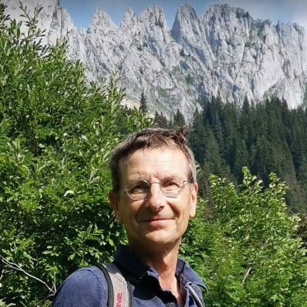

Olav ten Bosch, PhD

Work fields:
metadata standards, visualization, webscraping; open data, open source software, official
statistics, citizen science
Affiliations:
Statistics Netherlands,
DrasticData
Lives in:
Delft, the Netherlands
LinkedIn
GitHub
Twitter
Scholar
Researchgate
ORCID
Email
Publications / Talks
2022
Olav ten Bosch, Edwin de Jonge, Henk Laloli, Christine Laaboudi-Spoiden, (2022), FAIR Digital Objects in Official Statistics, Research Ideas and Outcomes, vol. 8, no. , pp. e94485, Pensoft Publishers, doi: 10.3897/rio.8.e94485, link, report (pdf)
O. ten Bosch, E. de Jonge, M. van der Loo, (2022), Discover the hidden validation rules in your data with `validatesuggest', UNECE Expert Meeting on Statistical Data Editing, report (pdf), slides (pdf), conference
Olav ten Bosch, Matjaz Jug, (2022), Innovation Meets Standardisation, But Where?, Unece, ModernStats World Workshop 2022, Serbia, report (pdf), conference
Olav ten Bosch, Mark van der Loo, (2022), Quality assurance from an internationally standardized and generic data validation ecosystem, European Conference on Quality in Official Statistics, Vilnius, Lithuania, report (pdf), conference
2021
Benjamin PM Laevens, Olav ten Bosch, Frank P Pijpers, Wilfried GJHM van Sark, (2021), An observational method for determining daily and regional photovoltaic solar energy statistics, Solar Energy, vol. 228, pp. 12--26, Elsevier, doi: 10.1016/j.solener.2021.08.077, link, arXiv (preprints)
Olav ten Bosch, Mark van der Loo, (2021), Extending data validation with standardised metadata from SDMX registries, The Use of R in Official Statistics - uRos2021 (virtual), Book of abstracts, pp. 15, conference
Sofie De Broe, Olav ten Bosch, Piet Daas, Gert Buiten, Ben Laevens, Bert Kroese, (2021), The need for timely official statistics. The COVID-19 pandemic as a driver for innovation, Statistical Journal of the IAOS, vol. 37, no. 4, pp. 1221--1227, IOS Press, doi: 10.3233/sji-210825, link, report (pdf)
Olav ten Bosch, Mark van der Loo, (2021), Validation in R Using Metadata from SDMX Registries, 8th SDMX Global Conference, INEGI, Mexico (virtual), conference
Sofie De Broe, Peter Struijs, Piet Daas, Arnout van Delden, Joep Burger, Jan van den Brakel, Olav ten Bosch, Kees Zeelenberg, Winfried Ypma, (2021), Updating the paradigm of official statistics: New quality criteria for integrating new data and methods in official statistics, Statistical Journal of the IAOS, vol. 37, no. 1, pp. 343--360, IOS Press, doi: 10.3233/sji-200711, link
2020
Olav ten Bosch, Mark van der Loo, Alexander Kowarik, (2020), The awesome list of official statistical software: 100 ... and counting, The Use of R in Official Statistics - uRos202 (virtual), slides (pdf), conference
Olav ten Bosch, Sofie De Broe, Kris Vanherle, Ben Laevens, (2020), Citizen science for official statistics: dream or reality?, BigSurv20, Utrecht, Netherlands, abstract (pdf), slides (pdf), conference
O. ten Bosch, M. van der Loo, S. Quaresma, (2020), Implementing main types of international validation rules in national validation processes, UNECE Work session on statistical data editing, report (pdf), slides (pdf), conference
2019
Olav ten Bosch, Sofie De Broe, (2019), From Experimental to Official Statistics, the case of solar energy, Eurostat Energy Statistics Working Group meeting (ESWG), slides (pdf)
Arnout Van Delden, Dick Windmeijer, Olav ten Bosch, (2019), Finding enterprise websites, European Establishment Statistics Workshop (EESW19), Bilbao, Spain, link
S. Broe De, R. Meijers, O. Bosch ten, et. al., (2019), From experimental to official statistics: The case of solar energy, Statistical Journal of the IAOS, vol. 35, no. 3, pp. 371--385, IOS Press, doi: 10.3233/sji-180458, link
Olav ten Bosch, Dick Windmeijer, Alex Priem, Wiet Koren, Martijn Tennekes, (2019), ClairCity: official statistics as an enabler in a citizen-led European air quality project, New Techniques and Technologies for Statistics conference, report (pdf), slides (pdf), conference
Mark van der Loo, Olav ten Bosch, (2019), Implementation of generic data validation methodology for Short Term Statistics, The European Establishment Statistics Workshop 2019 - EESW19 - Bilbao
Arnout van Delden, Dick Windmeijer, Olav ten Bosch, (2019), Searching for business websites, Discussion paper, Statistics Netherlands, report (pdf), link
O. ten Bosch, M. van der Loo, (2019), A generic shiny/js dashboard for data validation results, The use of R in official statistics (uRos2019), conference
2018
Arnout van Delden, Piet Daas, Olav ten Bosch, Dick Windmeijer, (2018), Tekstanalysemethoden; Toepassingen in de officiele statistiek, Stator, vol. 19, no. 2, pp. 8--12, Vvsor, report (pdf), link
Olav ten Bosch, Dick Windmeijer, Arnout van Delden, Guido van den Heuvel, (2018), Web scraping meets survey design: combining forces, Big Data Meets Survey Science Conference, Barcelona, Spain, report (pdf), conference
VTL Task Force, SDMX Technical Working Group, others, (2018), Validation \& Transformation Language 9, Version
2017
Olav ten Bosch, (2017), An Introduction to Web Scraping, IT and Legal Aspects, European Commission
Mark van der Loo, Olav ten Bosch, (2017), Design of a generic machine-readable validation report structure, no. deliverable No. 2, link, report (pdf)
2016
Piet JH Daas, JMS Burger, Quan Le, Olav ten Bosch, Marco Puts, (2016), Profiling of Twitter users: a big data selectivity study, Statistics Netherlands, report (pdf)
Robert Griffioen, Olav ten Bosch, (2016), On the use of Internet data for the Dutch CPI, UNECE - Meeting of the Group of Experts on Consumer Price Indices, report (pdf)
Marco Di Zio, N. Yu. Fursova, Tjalling Gelsema, Sarah Giessing, Ugo Guarnera, Jurate Petrauskiene, Lucas Quensel, Mauro Scanu, Olav ten Bosch, Mark van der Loo, Katrin Walsdorfer, (2016), Methodology for data validation 1.0, link
2014
Olav ten Bosch, Dick Windmeijer, (2014), On the use of internet robots for official statistics, Unece, Meeting on the Management of Statistical Information Systems (MSIS), report (pdf), conference
2012
Olav ten Bosch, Andrea Scharnhorst, Peter Doorn, Henk Koning, (2012), Visual exploration of the attribute space of DANS EASY metadata, Dans, DrasticData, doi: 10.17026/dans-zeq-q3b7, link
Rutger Hoekstra, Olav ten Bosch, Frank Harteveld, (2012), Automated data collection from web sources for official statistics: First experiences, Statistical Journal of the IAOS, vol. 28, no. 3, 4, pp. 99--111, IOS Press, doi: https://doi.org/10.3233/SJI-2012-0750, link
Andrea Scharnhorst, Olav ten Bosch, Peter Doorn, (2012), Looking at a digital research data archive - Visual interfaces to EASY, CoRR, vol. abs/1204.3200, link, report (pdf)
Alkim Almila Akdag Salah, Andrea Scharnhorst, Olav ten Bosch, Peter Doorn, Lev Manovich, Albert Ali Salah, Jay Chow, (2012), Significance of Visual Interfaces in Institutional and User-Generated Databases with Category Structures, Proceedings of the Second International ACM Workshop on Personalized Access to Cultural Heritage, pp. 7–-10, Association for Computing Machinery, link, abstract (pdf)
2011
Piet Daas, Marko Roos, Chris De Blois, Rutger Hoekstra, Olav Ten Bosch, Yinyi Ma, (2011), New data sources for statistics: Experiences at Statistics Netherlands, Citeseer, Paper for the 2011 European New Technique and Technologies for Statistics conference, February, pp. 22--24
Olav ten Bosch, Roelof Lindeman, (2011), SDMX from the Dutch perspective: lessons learned, SDMX Global Conference, World Bank, Washington, report (pdf), slides (pdf), conference
2008
Olav ten Bosch, Edwin de Jonge, (2008), Visualising official statistics, Statistical Journal of the IAOS, vol. 25, no. 3, pp. 103--116, IOS Press, report (pdf), link
2006
Olav ten Bosch, Edwin de Jonge, (2006), From statistical data supplier to statistical information service provider, International Marketing and Output Database Conference. Avila, Spain
Olav ten Bosch, Frans Hoeve, (2006), A strategy for controlled and secure access to microdata at Statistics Netherlands, UNECE Meeting on management of statistical information systems (MSIS), Sofia, Bulgaria, report (pdf), conference
2005
Edwin de Jonge, Olav ten Bosch, (2005), Augmenting search with a Semantic Visual Graph, Enschede, The Netherlands, SVG.Open conference 2005, report (pdf), slides (pdf)
Olav ten Bosch, Edwin de Jonge, Erik van Bracht, (2005), Automated Access To 100,000,000 Statistical Facts Via Statline4 Web Services, UNECE Meeting on management of statistical information systems (MSIS), Bratislava, Slovakia, report (pdf), slides (pdf), conference
1997
Karel Olav Ten Bosch, (1997), Design flow management in CAD frameworks., Delft University of Technology, PhD Thesis
1995
Olav Ten Bosch, Pieter van der Wolf, Alfred Van Der Hoeven, (1995), Design Flow Management: More than Convenient Tool Invocation, Kluwer Academic Publishers, Electronic Design Automation Frameworks: Proceedings of the fourth International IFIP WG 10.5 working conference on electronic design automation frameworks, pp. 149
Olav ten Bosch, Pieter van der Wolf, Alfred van der Hoeven, (1995), Design Flow Management: more than convenient tool invocation, Electronic Design Automation Frameworks, pp. 149--158, Springer
1994
Pieter Van Der Wolf, Olav Ten Bosch, Alfred Van Der Hoeven, (1994), An enhanced flow model for constraint handling in hierarchical multi-view design environments, Proceedings of the 1994 IEEE/ACM international conference on Computer-aided design, pp. 500--507
AJ Van der Hoeven, K Olav ten Bosch, Rene van Leuken, Pieter van der Wolf, (1994), A flexible access control mechanism for CAD frameworks., Citeseer, Euro-dac, pp. 188--193
1993
Olav ten Bosch, Pieter van der Wolf, Peter Bingley, (1993), A flow-based user interface for efficient execution of the design cycle, Ieee, Proceedings of 1993 International Conference on Computer Aided Design (ICCAD), pp. 356--363
1992
Peter Bingley, Olav ten Bosch, Pieter van der Wolf, (1992), Incorporating design flow management in a framework based CAD system, Institute Of Electrical Engineers Inc (Iee), Ieee International Conference On Computer Aided Design, pp. 538--538
1991
K Olav ten Bosch, Peter Bingley, Pieter van der Wolf, (1991), Design flow management in the NELSIS CAD framework, Proceedings of the 28th ACM/IEEE Design Automation Conference, pp. 711--716
P van den Hamer, KO ten Bosch, P Bingley, MA Treffers, P van der Wolf, (1991), A comparison of two approaches to design flow management by data schema analysis, JESSI-SPI project paper
.
Sites / Awesome lists
Awesome list of official statistics software: awesomeofficialstatistics.org
Awesome web visualization frameworks: https://github.com/olavtenbosch/awesome-web-visualization-frameworks
The Data Validation cookbook: https://data-cleaning.github.io/validate/
DrasticData: https://www.drasticdata.nl
Dutch regional education figures (Dutch): https://www.onderwijsinderegioincijfers.nl/
Student flows in Dutch education (Dutch): https://www.sterkberoepsonderwijs.nl/app/
DrasticTreemap: example
Validation dashboard: https://github.com/data-cleaning/ValidatReport
Other
Reviewer for the Statistical Journal of the IAOS
Reviewer for the Open Access peer-reviewed journal Big Data & Society about the implications of Big Data for societies.
ClairCity: News article CBS